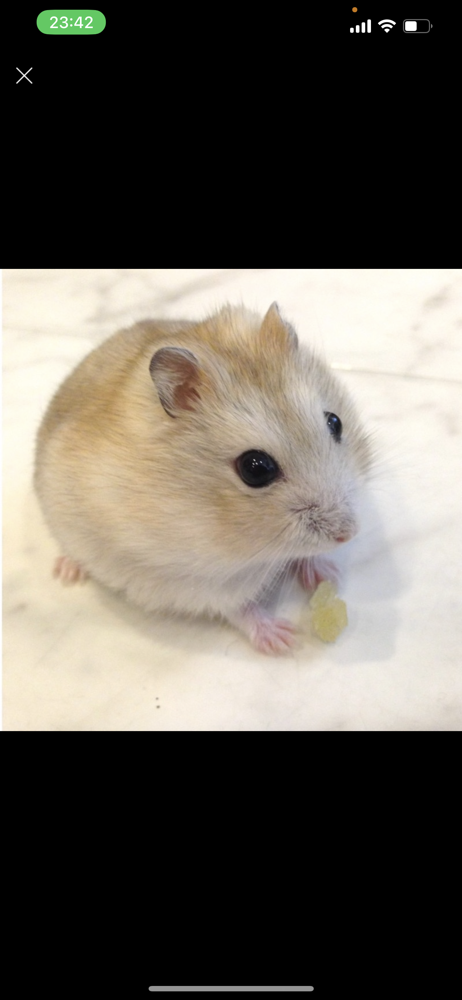

名古屋市立大学 経済学部 AIゼミ
AIで仕組みを変える。
ラーメンで心を満たす。
名古屋市立大学経済学部のAIゼミ生。AIエージェント設計・ビジネスワークフロー改善に挑む傍ら、次郎系ラーメンを食べ歩き、バンドでギターを弾き、ハムスターのおすしを溺愛する日々の記録。
Profile 自己紹介
名古屋市立大学経済学部のAIゼミに所属。AIエージェントの設計・構築を通じて、ビジネスのワークフローを見直すことを目標にしている。
今はコーディングを学びながらポートフォリオサイトを作ったりアプリを改造したりしている。今後は作品制作や産学連携にも挑戦予定。

おすし
ハムスター / 最近の推し / 名前のセンスには自信あり
🎓名古屋市立大学 経済学部
🤖AIゼミ所属・エージェント設計中
🍜次郎系信者。ニンニクアブラカラメ
🎸ギターメイン、ベースも弾ける
✈️フィリピン渡航済み、世界一周計画中
🐹ハムスター「おすし」の親
Works 作ったもの
No.2
次の作品
制作中…